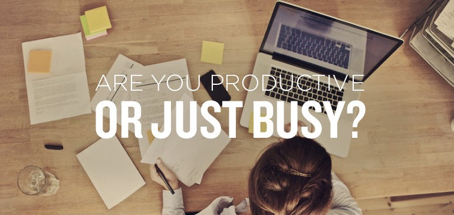

Are you really being productive?
Published: 8th June, 2015
Many people commonly mistake being busy to being productive because they feel like they have done quite a lot of things when in actual fact they have done a bit of everything rather than completing something important or that needed to be done.

To understand these two in more detail let’s look at the definition of both.
- Busy: Having a great deal to do.
- Productive: Producing or able to produce large amounts of goods, crops, or other commodities.
From those two definitions, it is clear that I can infer that being productive means that more important tasks will be completed rather than the little odd tasks that take up time.
I have put together a list of ways to help you be more productive.
Number 1 - Stay focused
The first way to be productive is to stay focused on only one task at a time, allowing you to fully concentrate on the task that you are doing. This means that you will be able to get more tasks completed as you aren’t trying to do multiple things at once.
Number 2 - Be organised and prioritise
Organising and prioritising your work will allow you to know what you have to do and which of those is most important. This allows you to focus on the most important tasks first.
Number 3 - Manage your time
Alongside being organised and prioritising, managing your time doing those tasks is important to being productive. This involves setting realistic deadlines for those tasks.
Number 4 - Take plenty of breaks
As well as managing your time you need to make sure that you take plenty of breaks. This is because stopping and thinking can help productivity as you can let the creativity flow. Engineering professor Barbara Oakley explains how taking breaks allows the mind to solve many problems while daydreaming saying;
When you’re focusing, you’re actually blocking your access to the diffuse mode. And the diffuse mode, it turns out, is what you often need to be able to solve a very difficult, new problems.
The main problem when working on a task is boredom (basically becoming unfocused). Taking breaks throughout doing that task can stop you getting bored thus being able to complete the task that is of good quality.
A bit of food for thought: Research has shown that the average human’s attentions span is only 5 minutes while the most healthy teenagers and adults can only keep focused on one thing for no more than 20 minutes at a time.
Number 5 - Have a healthy lifestyle
I am no health expert but I have heard from those in the health and fitness industry that by eating, drinking and having enough sleep can boost productivity. This is because you are replenishing and re-energising the brain ready for the next day.
Don’t know how much sleep you need? I have listed the average amount of hours needed by age range. These details are from www.helpguide.org
- Newborn to 2 months old = 12 to 18 hours
- 3 months to 1 year old = 14 to 15 hours
- 1 to 3 year olds = 12 to 14 hours
- 3 to 5 years old = 11 to 13 hours
- 5 to 12 years old = 10 to 11 hours
- 12 to 18 years old = 8.5 to 10 hours
- Adults (18+) = 7.5 to 9 hours
Number 6 - Don’t work without play
Finally, don’t make every second of every day about doing work as you will become unfocused. Give yourself enough time to relax and spend time doing the things you enjoy whether that is going out with friends or being active.
By being productive rather than being busy you will be able to complete more tasks, accomplish more and have more time to relax because you are not spending all your time doing odd jobs and never actually finishing anything.
I certainly will be following these six points as although I have spurts of productivity I do find myself more often than not just being busy.
Are you productive or just busy? Let me know in the comments below and if you have any top tips that I missed please feel free to share those below as well.
Read more about the science of taking breaks to boost productivity here: Bufferopen